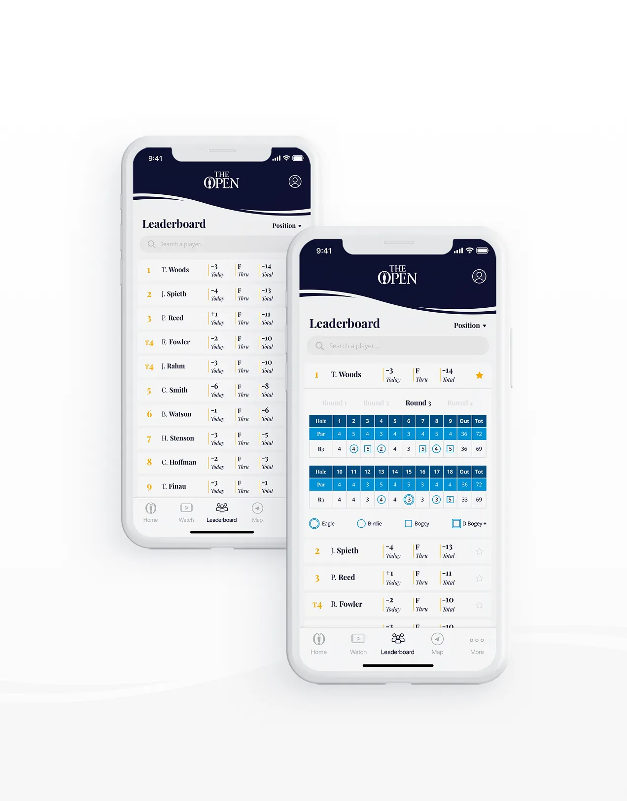

UI/UX Design · Golf
Case 05 / 08

The Open
Honouring 150 years of tradition through modern craft in digital.
The Open Championship is golf's original major, and its digital experience needed to reflect that legacy while serving a mobile-first audience that follows every shot on their phone. The R&A wanted an app that felt as premium as the event itself, for fans on the links and at home.
The objective: combine real-time leaderboard data, hole-by-hole scoring and live video with the editorial depth The Open's heritage demands.
I designed the end-to-end experience: tournament hub, interactive course maps, player profiles and notification flows, carving a cleaner digital language out of the championship's identity.
Highlights
06 screens
